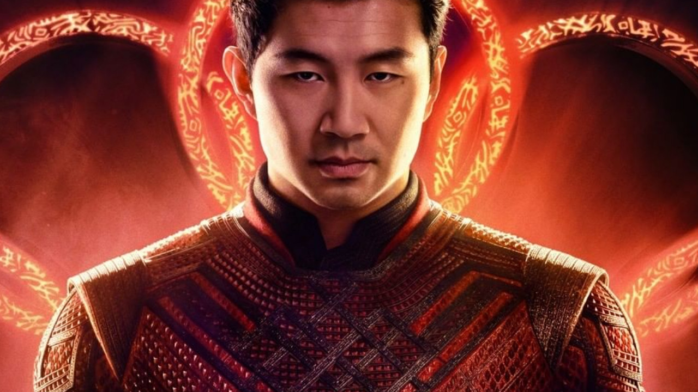
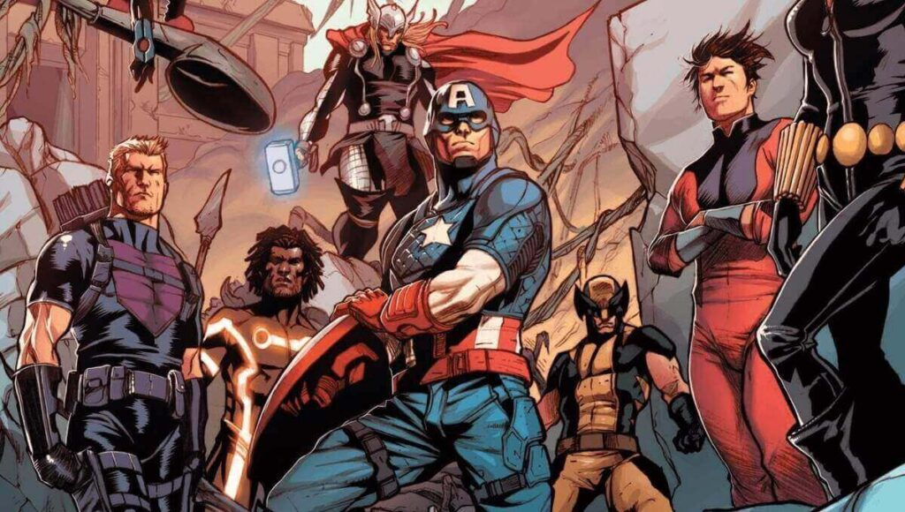

Estreou e já é sucesso tando no streaming quanto no cinema,
a nova aposta da marvel no MCU (UCM), estrela como o primeiro herói asiático,
interpretado por Simu Liu.
Shang foi treinado em uma fortaleza oriental na grande China por seu pai Muchu
e se tornou um especialista em várias artes marciais, dominando todos os estilos
de wushu, e mesmo não tendo "superpoderes", consegue estar no mesmo nível que muitos
super-heróis, tanto que nas HQ's já foi aliado dos vingadores.

Shang tem como seu maior inimigo seu próprio pai, não é como se fosse um arqui-inimigo,
mas quando Shang descobriu que seu pai era mal, um vilão que tentou conquistar o mundo
várias vezes, se rebelou contra ele e os dois vivem em constante guerra desde então.
Habilidades
Não pode-se dizer que Shang-Chi tem super poderes, já que nasceu como uma pessoa comum
e adquiriu tudo o que sabe fazer com treino, se tornando mestre de todos os esilos de wushu, e suas
habilidade são:
▪ Manuseio de espadas e nunchakus
▪ Controle do sistema nervoso, conseguindo resistir à substâncias tóxicas e dor.
▪ Detentor dos Dez Anéis que é um artefato místico (como por exemplo o Doutor Estranho e a jóia do infinito).
▪ Controle do KI (para fãs de dragon ball) ou CHI, pode-se pensar como Chakra também (para fãs de Naruto).
Participações
Shang-shi embora só tenha aparecido no streaming e no cinema agora, já teve diversas participações no universo
cinematográfico da marvel, como em:
▪ Heróis de aluguel
▪ Nova Marvel (quando é recutrado pelo Steve Rogers para os Avengers)
▪ Protetores
▪ Era eróica
▪ A Guerra dos Reinos
▪ Enter the Phoenix
▪ Império Secreto etc...
Resenhas / Críticas
“Shang-Chi é incrível. O filme atinge tudo que a Marvel faz bem (ritmo, humor, personagem) e adiciona uma ação nunca vista antes no MCU! Muitas pessoas vão ter um novo herói favorito. Mais sombrio do que esperado. Cheio de diversão. Integral para Fase 4 do UCM!”, Brandon Davis (Comic Book)
#ShangChi is awesome. This movie hits all that Marvel does well (pacing, humor, character) and adds action like we’ve never seen from the MCU before! 👏🏻👏🏻
— BD (@BrandonDavisBD) August 17, 2021
Lots of people are about to have a new favorite Marvel hero.
Darker than expected. Loads of fun. Integral to MCU Phase 4!👀 pic.twitter.com/YI3jkwLuq6
“Shang-Chi e a Lenda dos Dez Anéis é fenomenal. Crie expectativa. Cada cena de ação é melhor que a anterior. Simu Liu abraça completamente o papel de herói. Imagens incríveis. Trilha sonora arrasadora. Você vai querer ver nos cinemas”, disse a crítica Wendy Lee
Shang-Chi And The Legend Of The Ten Rings is PHENOMENAL. Get hyped. Even fight scene/action sequence is better than the last. @SimuLiu fully embraces the marvel superhero role. Amazing imagery. Killer soundtrack. You’ll want to see this on the big screen. #shangchi
— Wendy Lee Szany (@WendyLeeSzany) August 17, 2021
Aqui vai uma do Peter Jordan (Ei Nerd) pra descontrair:
Gente eu vi shang chi e me rasguei todo chorei muito bati na Andreza puxei o cabelo tirei as calças e corri de calcinhas no meio dos carros jogando cocô em quem passava
— Peter Jordan (@peterjordan100) September 3, 2021